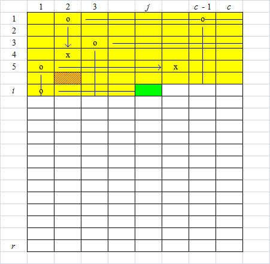

scx 在 Berland 有一家商店。由于该城市中最近犯罪活动在增长，因此 scx 正在思考如何在仓库建立更好的防护措施。
仓库可以看作一个 $r$ 行 $c$ 列的矩阵，其中每个格子为空地 (存货区，用 . 表示) 或墙 (用 x 表示)。
scx 想要雇佣几个看守 (可能是 $0$ 个) 去仓库监视，每个看守必须在一个空地上，并且能保护它右边和下面的所有格子，直到碰到最接近的墙。更正式地，如果这个看守在坐标为 $(x_0, y_0)$ 的空地，则它能保护的坐标 ($x_1, y_1$) 必须满足如下条件：
一个雇佣看守的方案就是一些空地的集合，因此，两个方案不同当且仅当存在一个格子使得两个方案中只有其中一个有看守。
scx 觉得一个方案是合适的，当且仅当所有空地中未被任何一个看守保护的空地不超过 $1$ 个。
scx 想知道，一共有多少种合适的方案。由于方案数可能很大，请模 $10^9 + 7$ 输出。
第一行有两个正整数 $r, c$ ($rc \leq 250$) 表示仓库的行数和列数。
接下来的 $r$ 行，每行一个长度为 $c$ 的字符串，第 $i$ 行的字符串描述仓库的第 $i$ 行，每个字符为 . 和 x 之一。
输出一行一个整数，表示不同的合适的方案数模 $10^9 + 7$ 的值。
考虑到 $1 \leq rc \leq 250$，因此有 $\min\{r, c\} = \sqrt{\min\{r, c\}^2} \leq \sqrt{rc} \leq \sqrt{250}$，因此有 $\min\{r, c\} \leq 15$，以下不妨设 $c \leq 15$，否则将整个矩阵转置一下即可。
记 $f_{i, j, A, s, u}$ 表示当前扫描到第 $i$ 行第 $j$ 个格子，前面的所有格子均已确定，且上面有看守能保护下来的列的集合为 $A$，左边是否有能保护的看守的情况为 $s$ ($s = 1$ 代表有)，前面的格子未被保护的有 $u$ 个的方案总数。
以下图为例，o 代表看守员，x 代表墙，红色阴影格子代表未被保护的格子：

则它就对应状态 $f_{i, j, \{1, 3, c-1\}, 1, 1}$。
接下来考虑转移。如果 $(i, j)$ 格子是一堵墙，则转移比较简单，就只需让 $A$ 集合减少 $j$ (因为如果上面有看守，已经保护不下去了)，并且 $s$ 也要置 $0$ (因为如果左边有看守，也保护不下去了)，$u$ 照常，故有
$$ f_{i, j+1, A \setminus \{j\}, 0, u} \uparrow f_{i, j, A, s, u} $$
其中 $A \setminus B$ 表示差集， $a \uparrow b$ 代表 a += b。
如果 $(i, j)$ 是空地，考虑两种情况：
接下来考虑从 $f_{i, n, \cdots}$ 转移到 $f_{i+1, 0, \cdots}$，可以发现，只需将 $s$ 置 $0$ (因为新的一行左边是没有看守的)，其它都不变就行了，因此转移即
$$ f_{i+1, 0, A, 0, u} = f_{i, n, A, 0, u} + f_{i, n, A, 1, u} $$
在实际实现的时候，可以考虑用状态压缩 DP 压一下空间， 记 f[ij][k][l] 中第一维表示坐标 (转化为一维)，第二维表示集合 $A$ (共 $2^{15}$ 种)，第三维高低位表示 $s$ 和 $u$。
然后新行转移的时候特判一下 $s$ 即可。答案就是最后位置所有情况的和，即
$$ \sum_{A \in \Omega, s, u \in \{0, 1\}} f_{n, 0, A, s, u} $$
，时空复杂度均为 $O(2^c rc)$。
#include <bits/stdc++.h>
#define N 255
#define enc(x, y) ((x) * c + (y))
using namespace std;
typedef long long ll;
const ll mod = 1000000007;
int r, c, i, j, ij, k, l;
int nk, nl;
char m[N][18], __buffer__[N];
ll f[N][32780][4], ans = 0;
// f[ij][k][l]: ij is the row and column, k is the last row irradiate (vertical)
// l & 2 is this row irradiate (horizontal), l & 1 is if there has a grid not unlighted
inline void add(ll &A, const ll B) {(A += B) >= mod ? A -= mod : 0;}
void init(){
scanf("%d%d", &r, &c);
if(r < c){
swap(r, c);
for(i = 0; i < c; ++i){
scanf("%s", __buffer__);
for(j = 0; j < r; ++j) m[j][i] = __buffer__[j];
}
}else
for(i = 0; i < r; ++i)
scanf("%s", m[i]);
}
int main(){
init();
f[0][0][0] = 1;
for(i = 0; i < r; ++i)
for(j = 0; j < c; ++j){
ij = enc(i, j);
for(k = 0; k < 1 << c; ++k)
for(l = 0; l < 4; ++l)
if(f[ij][k][l]){
if(m[i][j] == 120){
nk = k & ~(1 << j);
add(f[ij + 1][nk][l & 1], f[ij][k][l]); // found a wall
}else{
nl = l & (j == c - 1 ? 1 : 3);
if(k >> j & 1 || l & 2) add(f[ij + 1][k][nl], f[ij][k][l]); // (i, j) is lighted
else if(~l & 1) add(f[ij + 1][k][nl | 1], f[ij][k][l]); // (i, j) is unlighted
nk = k | 1 << j;
nl = (j == c - 1 ? l & 1 : l | 2);
add(f[ij + 1][nk][nl], f[ij][k][l]); // take a guard
}
}
}
ij = r * c;
for(k = 0; k < 1 << c; ++k) for(l = 0; l < 4; ++l) add(ans, f[ij][k][l]);
printf("%lld\n", ans);
return 0;
}
坑1：在状态压缩的时候，子集的各种枚举情况要控制好，转移的时候位运算也要恰当，不要转移错位置。
坑2：还有 $r < c$ 时需要转置，读入的时候要做注意点，判断墙的 == 120 (== 'x') 不要忘记。